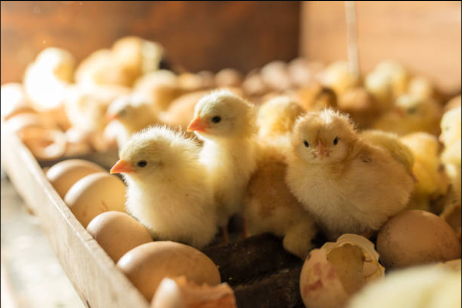
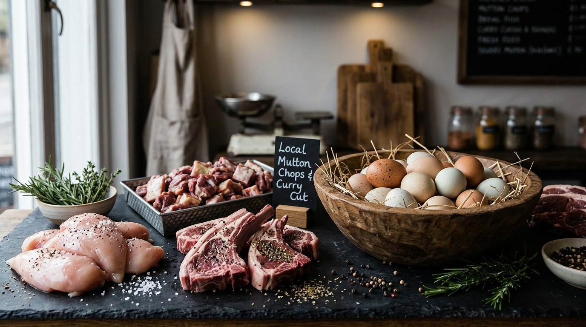

01
Goat sale
Healthy, happy, and raised with care.
Small farm, big table
We grow honest food and good days on 42 acres of living soil in the foothills of the Blue Ridge.
Discover
Welcome to MGH Farm
At MGH Farm, we are passionate about raising healthy livestock and poultry and providing quality farm products to our customers.
Our farm focuses on chickens, goats, eggs, and chicks, with attention to proper care, healthy growth, and responsible farming practices. We believe that good farming starts with caring for our animals and maintaining a clean and healthy farm environment.
How we started
MGH Farm started with a passion for farming and livestock. With dedication and hard work, we began raising chickens and goats and gradually expanded our farm to provide a wider range of quality farm products.
Today, MGH Farm serves customers looking for healthy chickens, goats, fresh eggs, and chicks for their homes, farms, and poultry needs.
What we offer
We care for every part of our farm so customers can choose products with confidence.
Our commitment
At MGH Farm, we give importance to healthy livestock and poultry, proper feeding and care, clean and hygienic surroundings, quality farm products, customer satisfaction, and responsible farming practices.
Our goal
Our goal is to build MGH Farm into a trusted name for livestock and poultry products. We want our customers to feel confident when they choose MGH Farm for their chickens, goats, eggs, and chicks.
We continue to improve our farming practices and grow our farm while maintaining the care and values with which we started.
Growing with you
Farming is a journey that requires patience, dedication, and care. At MGH Farm, we are proud to be part of that journey and look forward to growing together with our customers.
Whether you are looking for chickens, goats, fresh eggs, or chicks, MGH Farm is here to serve you.
Thank you for being part of our journey.
MGH Farm
Quality Livestock. Fresh Eggs. Healthy Chicks. Trusted Farming.
Right now at the farm
Healthy, happy, and raised with care.

Small flock starters for good homes.

Strong layers and friendly backyard birds.

Collected fresh from our flock.
Your next good day
The gate is open MON-SUN from 9am to 2pm. Bring a basket, stay for lunch, and leave with something good.